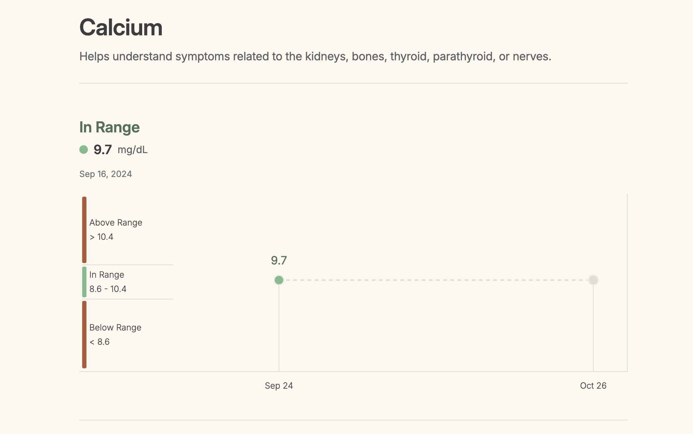
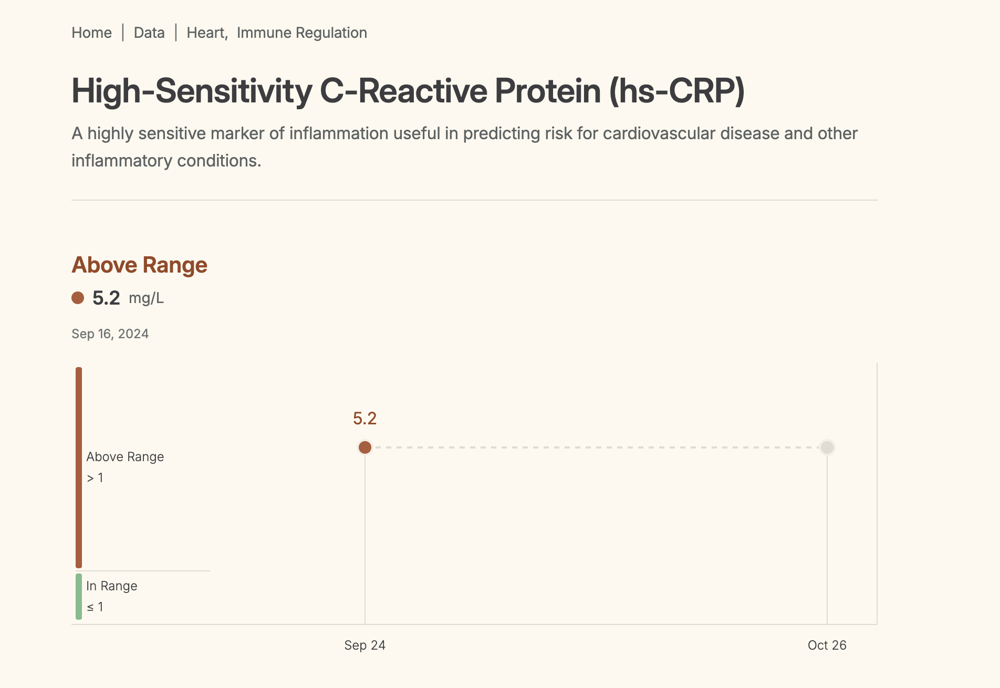

P · Physiology · Module 1
Introduction to Physiology,
how the living body actually works.
Anatomy tells you what a structure is. Physiology asks the harder question: what does it do, and how does it keep doing it while everything around you changes. Today we build the framework the rest of the course sits on.
Dr. Sharilyn Rennie · BIO 005 Human Physiology
Where we are going
Six ideas, and everything else hangs off them
Open a box to see what is inside it. You do not need to memorize this slide, you just need to know where we are headed.
One
What physiology is
Function, mechanism, and the themes that repeat.
We define the field, then name the eight themes that show up in every chapter you will read this term.
Two
Systems and emergence
The whole does things no single part can do.
Why studying one cell in isolation will never tell you what a person can do.
Three
Homeostasis
A stable internal environment that is never actually still.
The single most important word in this course, and the one most often misunderstood.
Four
Mass balance and mass flow
What comes in has to match what goes out.
Two equations that let you predict what happens to any substance in the body.
Five
Control systems
Sensor, integrating center, effector.
Negative feedback, positive feedback, and feedforward, with a worked example of each.
Six
How we know any of it
Physiology is built on experiments, not opinions.
Hypotheses, variables, controls, replication, and what makes evidence good enough to treat a patient with.
Definition
Physiology is the study of function and mechanism
The definition
What the field studies
The functions and mechanisms of a living system and its parts.
In this course the living system is the human body, so we are studying what each part does and the machinery that lets it happen.
The goal
What we are trying to explain
The physical and chemical factors behind the origin, development, and progression of life.
Put plainly, we are explaining the characteristics and mechanisms of the human body that make it a living being rather than a collection of chemicals.
Anatomy asks what it looks like. Physiology asks what it does and how.
The eight themes
Eight ideas that repeat in every chapter
Every topic this term is a variation on one of these. When a chapter feels like too much detail, ask yourself which theme it belongs to.
Theme 1
Homeostasis and control
Stability that is actively defended.
The body holds a stable internal environment, and it takes control systems to do it.
Theme 2
Sensing the inside
Organisms sense and control the internal environment.
Nothing gets regulated unless something is measuring it first.
Theme 3
Responding to the outside
The body responds to the external environment.
Heat, cold, altitude, food, infection. The outside world keeps pushing and the body keeps answering.
Theme 4
Structure and function
Form and function are linked at every level.
From the shape of a protein to the shape of a lung, structure predicts what a thing can do.
Theme 5
Molecular interactions
Molecules bind and react to produce biological function.
Enzyme and substrate, hormone and receptor. Most physiology comes down to one molecule finding another.
Theme 6
Compartmentation
Dividing the body into compartments isolates function.
Membranes let two incompatible processes run at the same time a few nanometers apart.
Theme 7
Biological energy use
Energy gets transferred, stored, and spent.
Every process you study this term has an energy cost, and the body budgets carefully.
Theme 8
Communication and information flow
Function has to be coordinated.
Electrical signals, chemical signals, and feedback are how a trillion cells act like one organism.
Systems theory
Physiology is an integrative science
What a system is
A group of interacting parts
Interacting, interdependent components forming a complex whole.
The parts are not just sitting next to each other. Each one depends on the others, so the arrangement matters as much as the pieces.
Why it matters clinically
Change one part, change the system
Changing one component can alter the whole system.
This is why a single failing organ shows up as symptoms all over the body, and why you cannot treat one number on a lab panel without thinking about the rest.
You cannot predict what a system will do from a list of its parts.
Systems theory in the body
Three places where one change cascades
Insulin production drops
Glucose metabolism changes everywhere at once.
The pancreas is one organ, but when insulin production is disrupted, glucose handling shifts in muscle, liver, fat, and brain. One failure, systemic consequences.
Kidney function is lost
Blood pressure regulation goes with it.
You would not guess from the kidney's job description that it helps set blood pressure, but it controls fluid volume and releases renin, so losing kidney function raises pressure.
Neurotransmitter levels shift
Mood and cognition shift with them.
A change measured in molecules turns into a change in how a person thinks and feels. Same principle, much larger scale.
This is what integrative means. Nothing in this body works alone.
Emergent properties
Some properties cannot be predicted from the parts
Definition
Emergent property
A property that cannot be predicted from knowledge of the individual components.
It appears only once the components are assembled and interacting. Take the system apart and the property disappears.
The analogy
A box of car parts
Nuts and bolts do not predict a machine that turns gasoline into motion.
Order every part of a car and lay them on the floor. Nothing in that pile tells you that assembled correctly it becomes transportation. Now ask the same question about elements, molecules, and a thinking, feeling, living person.
Assembly, not inventory, is where the interesting properties come from.
Emergent properties in people
Three things no single nerve cell can do
Example 1
Consciousness
Not a property of any one neuron.
Nothing about the electrical behavior of a single nerve cell predicts awareness. It shows up only in the network.
Example 2
Metabolism
A property of thousands of reactions running together.
Each enzyme does one small job. Metabolism is what the whole coordinated set does.
Example 3
Emotion
Emerges from circuits, not from cells.
You will not find fear in a neuron any more than you will find speed in a spark plug.
None of these can be predicted from the properties of individual nerve cells.
How we explain things
Two ways to answer the same question
Ask a physiologist why we sweat and you can get two completely different answers. Both are correct. They are answering different questions.
Approach 1
Teleological
Explains function in terms of its adaptive purpose.
Why do we sweat? To cool the body and maintain temperature homeostasis. This answer tells you what the process is for.
Approach 2
Mechanistic
Explains function in terms of cause and effect.
Why do we sweat? Sweat glands release fluid onto the skin, the fluid evaporates, and evaporation carries heat away. This answer tells you how the process works.
Most exam questions in this course are asking for the mechanism. Get in the habit of answering how, not just why.
From bench to bedside
Translational medicine turns findings into treatment
Definition
Translational science
Basic research on biological function, implemented into clinical practice.
It starts with someone asking a basic question about how something works, and ends with a change in how patients are cared for.
Example
Cancer genetics to targeted therapy
Genetic research on cancer produced targeted therapies.
Researchers identified the specific mutations driving certain tumors. That basic finding became drugs designed to hit those exact targets instead of every dividing cell.
Everything you will do clinically started as somebody's basic science question.
The central concept
Homeostasis is stability, not stillness
Definition
Homeostasis
The ability to maintain a relatively stable internal environment despite external change.
Note the word relatively. The internal environment moves constantly, it just stays inside a range the cells can live with.
The correction
Not static, not unchanging
A better term is dynamic equilibrium.
Small changes are taking place in the internal environment all the time. Homeostasis is the ongoing work of keeping those changes small, not the absence of change.
If you picture a flat line, you have the wrong picture. Picture a needle that keeps twitching and keeps getting corrected.
When it fails
Failed homeostasis is what we call disease
A pathological condition is what you get when the body can no longer hold a variable inside its range. The failure comes from one of two directions.
Cause 1
Internal failure
A physiological process stops working properly.
Pancreatic beta cell dysfunction in diabetes is the classic example. The machinery that should regulate blood glucose is itself broken.
Cause 2
External disruption
Something from outside overwhelms the system.
A viral infection is the classic example. The control systems are intact, but the challenge is bigger than they can absorb.
The term you need
Pathophysiology
The study of body functions in diseased states.
Normal physiology and pathophysiology are the same subject viewed from two sides. Learn the normal loop well enough and the disease usually tells you which step broke.
Internal and external environment
The body is an open system
An open system exchanges both heat and materials with the outside world. That exchange is exactly why homeostasis takes constant work: things are always coming in and always going out.
The two fluid compartments
The internal environment is extracellular fluid
Compartment 1
Extracellular fluid, ECF
The watery internal environment that surrounds the cells.
When physiologists say internal environment, this is what they mean. It is the fluid your cells are bathed in.
Compartment 2
Intracellular fluid, ICF
The fluid inside the cells.
Separated from the ECF by the cell membrane, and held at a very different composition on purpose.
Why the ECF gets the attention
The ECF is a buffer zone
It sits between the outside world and the cells, so it has to be kept stable.
Anything reaching a cell passes through the ECF first. That makes the ECF the variable the body defends most aggressively, and it is where most of the numbers you will measure clinically come from.
Mass balance
What comes in has to match what goes out
The body is an open system, so to hold anything steady it has to balance the books on that substance. This is the law of mass balance, and it works for water, sodium, glucose, oxygen, carbon dioxide, and every waste product you will ever measure.
The law
Load stays constant when gain equals loss
Any gain must be offset by an equal loss.
Load is the total amount of a substance in the body. If the amount is holding steady, then everything coming in is being matched by something going out.
The two ways in, the two ways out
Four doors, not two
Gain is intake plus metabolic production. Loss is excretion plus metabolic removal.
Students usually remember intake and excretion and forget the other two. The body can also make a substance and destroy a substance, and both count.
Memory hook
Think of a bathtub with the tap running and the drain open.
The water level is the load. The tap is intake, the drain is excretion. The level holds steady only when the two rates match, and the level can hold perfectly steady while enormous amounts of water move through. That is exactly what your body is doing with sodium and water every single day.
The equation
Writing mass balance as math
Total body load of X = intake + metabolic production − excretion − metabolic removal
Two ways in, two ways out. If the four terms cancel, the load is not changing.
Term to know
Excretion
Elimination of material from the body, through urine, feces, lungs, or skin.
Carbon dioxide produced during metabolism is excreted by the lungs. Every breath out is an excretion event, which is why holding your breath changes your blood chemistry within seconds.
Term to know
Metabolic conversion
Turning a substance into a different substance by metabolism.
Nutrients entering metabolic pathways get converted into metabolites. The original molecule is gone from the books even though nothing left the body.
In the clinic
This is why we chart intake and output on every hospitalized patient.
The I and O sheet at the bedside is the law of mass balance written on paper. When the output column falls well behind the input column for a shift or two, somebody is retaining fluid, and that observation comes straight out of this slide.
Mass flow
Mass balance says how much. Mass flow says how fast
Mass flow lets us follow a substance as it moves through the body, so instead of a total we get a rate. It describes the rate of movement of substance X through body fluids or into and out of the body.
1
Intake
Substances entering the body.
Eaten, drunk, inhaled, injected, absorbed.
2
Production
Substances made by the body.
Metabolic pathways generating new molecules.
3
Transport
Substances moved from place to place.
Mostly by blood, which is why volume flow matters so much.
4
Excretion
Substances leaving one compartment for another.
Whether this can happen at all depends on whether the substance can cross the membrane in the way.
Mass flow (amount of X per min) = concentration of X (amount per volume) × volume flow (volume per min)
Volume flow is the flow of blood, air, urine, or any other fluid carrying the substance.
Concentration alone never tells you the whole story. A low concentration moving fast can deliver more than a high concentration sitting still.
Mass flow, worked
An IV glucose infusion, step by step
Patient A is given an IV infusion of glucose solution with a concentration of 50 grams of glucose per liter. The infusion runs at 2 milliliters per minute. What is the mass flow of glucose into the body?
Solution
- Write down what you have. Concentration of glucose is 50 g per liter. Infusion rate is 2 mL per minute.
- Fix the units before you do anything else. 2 mL per minute is 0.002 L per minute. Units are where most of the points get lost.
- Use the equation. Mass flow equals concentration times volume flow.
- Substitute. Mass flow equals 50 g per liter times 0.002 liters per minute.
Mass flow = 0.1 g of glucose per minute
Notice that liters cancel and you are left with grams per minute, which is exactly what a rate of input should look like. If your units do not cancel cleanly, you set the problem up wrong.
Memory hook
Let the units do the thinking for you.
Set up every problem in this course so the units cancel down to what the question asked for. If the question wants grams per minute and your setup gives you grams per liter, you have not made an arithmetic mistake, you have used the wrong equation.
Clearance
Output is hard to measure, so we measure clearance instead
Input is easy. You can weigh the food and read the label. Output is much harder, so we use an indirect method called clearance, which simply expresses how the body is handling substance X.
What clearance is
Volume of blood cleared per unit time
The volume of blood cleared of a substance per unit time.
Read the units carefully. Clearance is a volume per time, not an amount per time. It answers how fast, not how much.
What clearance does not tell you
Where it went
It only tells you the substance is being removed from the bloodstream.
The substance could be excreted in urine, broken down in the liver, or exhaled. Clearance is blind to the destination, and that is fine, because most of the time the rate is the clinically useful number.
Primary organs of clearance
Kidneys and liver
These two do most of the work.
The kidneys filter and excrete. The liver chemically converts substances into forms that can be excreted. Nearly every drug you will ever give a patient is cleared by one of these two.
Secondary organs of clearance
Lungs and skin
Real routes, smaller share.
The lungs clear volatile substances like carbon dioxide and inhaled anesthetics. The skin clears water and some solutes in sweat.
Worked number to remember
Urea clearance is typically about 70 mL per minute.
Urea is a normal metabolite produced from protein metabolism. A clearance around 70 mL per minute tells you it is being removed primarily by the kidneys. When you see that number fall on a patient's chart, you are watching kidney function decline in real time, which is why urea and creatinine are on nearly every basic lab panel.
A distinction people get wrong
Homeostasis does not mean equilibrium
Not this
Equilibrium
Implies the compartments have identical composition.
True equilibrium would mean the inside of your cells and the fluid around them contain the same things at the same concentrations. That is not the case anywhere in a living body, and if it ever happens you have died.
This
Dynamic steady state
A relatively stable state that is constantly changing and adjusting.
There is no net change in the regulated variable over time, but materials are moving between compartments continuously. Steady does not mean still.
Memory hook
Picture a busy coffee shop that always has about forty people in it.
Customers walk in and out all morning, so nothing is static. Count the people at any moment and you get forty, so nothing is changing either. That is a dynamic steady state. Equilibrium would mean the crowd inside the shop and the crowd out on the sidewalk are identical, which is obviously not what is happening, and the difference is the entire point.
Plasma, the fluid component of blood, is where you will see this most clearly. It never stops moving and its composition barely changes.
Steady state disequilibrium
Two compartments, stable but not equal
The intracellular fluid and the extracellular fluid sit in a relatively stable state of disequilibrium. They hold different concentrations of ions and molecules, so they are not at equilibrium, and yet the difference is held steady. The body spends real energy every second to keep it that way.
Memory hook
Banana inside, salt water outside.
Potassium is the banana ion and it lives inside the cell. Sodium and chloride are table salt and sea water, and they live outside the cell. If you can hold that one sentence, you can reconstruct resting membrane potential, action potentials, and most of the electrolyte disorders you will meet in a clinical setting.
Control systems
Regulated variables, setpoints, and the normal range
Term 1
Regulated variable
Something the body actively defends.
Temperature, blood glucose, heart rate, respiratory rate, blood pressure. If it has a normal range on a lab slip, somebody is regulating it.
Term 2
Setpoint
The optimal value for that variable.
The target the control system is aiming at, though the system almost never sits exactly on it.
Term 3
Normal range
The allowable values on either side of the setpoint.
Drift inside the range and nothing happens. Cross the edge and the control mechanism activates to bring the value back.
Memory hook
Your house thermostat is not trying to hold 70 degrees. It is trying to stay between 68 and 72.
The furnace does not run continuously to pin the temperature at exactly 70, because that would be exhausting and pointless. It waits until the room drifts out of range and then kicks on. Your body regulates temperature, glucose, and blood pressure the same way, and that gap between the limits is why two healthy people can have different normal values.
Reading a real result
The same idea, drawn two different ways
Here are two real results from the same blood panel. Before you read a single number, look at the colored bars on the left of each one. The shape of that graphic is already telling you something about the physiology.
Panel A · a two sided range

Panel B · a one sided range

Two sided
Calcium is a regulated variable
Normal range 8.6 to 10.4 mg/dL, and that window is narrow on purpose.
Calcium sits at the setpoint picture you just saw. Parathyroid hormone, calcitriol, and calcitonin work in both directions to hold it there. Nerve and muscle cells need a stable extracellular calcium to fire normally, so falling out either side causes real trouble: too low and nerves become overexcitable, too high and they become sluggish. A value of 9.7 sits comfortably inside, which is why the report says In Range and nothing more.
One sided
hs-CRP is not regulated at all
The report wants it at or below 1 mg/L, and there is no lower limit.
C reactive protein is an acute phase protein the liver releases when inflammation is present. Nothing in the body holds it at a setpoint, so a low value is not a deficiency, it is just an absence of the signal. That is why the graphic has no Below Range band. The number is not a variable being defended. It is a report on something else that is happening.
Ask who set the range, and for what
"Normal" is a decision, not a fact of nature.
This report draws the hs-CRP line at 1 mg/L. That is the cardiovascular low risk threshold, not the ordinary laboratory reference interval, which is usually below 3 mg/L. Same molecule, same blood, two defensible cutoffs, because one is answering "is this person inflamed right now" and the other is answering "what is this person's long term heart risk." Neither is wrong. They are answering different questions.
A flagged value is a question, not a diagnosis
Above range means look closer.
An hs-CRP of 5.2 tells you inflammation is present somewhere. It does not tell you where or why, and a recent cold, an injury, or a flare of an ongoing condition will all raise it. This is exactly why a single hs-CRP is not used alone for heart risk, and why a value over 10 is usually read as acute inflammation rather than as a cardiovascular number at all.
The band heights are not to scale
The picture is a legend, not a graph.
On the calcium panel the green band looks about as tall as each red one, but the real in range window is under 2 mg/dL wide while "above range" runs upward without limit. The bars are drawn for readability. Read the numbers printed beside them, not the pixels.
One point is not a trend
A line needs at least two real draws.
The timeline on the right of each panel has one filled point on it. The dashes running out to the second marker are the space where the next result will go, not a measurement and not a prediction. Watching a regulated variable move over time is far more informative than any single value, which is the whole reason these reports are built to be plotted.
Memory hook
Two red bands means the body is guarding it. One red band means the body is reporting on something else.
Every lab slip you ever read can be sorted this way in about two seconds. Sodium, potassium, calcium, glucose, pH and blood pressure are guarded from both sides, so they get a range with a floor and a ceiling. Inflammatory markers, tumor markers, and most toxins only have a ceiling, because there is no amount that is too low. Which shape a value has tells you whether you are looking at a control system or at a messenger.
If a value has a normal range with a floor and a ceiling, some control system is working to keep it there. Find the sensor, the integrating center, and the effector, and you have found the loop.
Two kinds of control
Local control and reflex control
Type 1
Local control
Restricted to the tissue or cell involved.
The problem is detected and solved right where it happens, with no message sent anywhere else. A small patch of tissue running low on oxygen releases a chemical that widens the nearby vessels, and the rest of the body never hears about it.
Type 2
Reflex control, long distance
The site controlling the response is far from the problem.
Systemic changes that affect the whole body need more complex control, so the signal travels. Reflex control uses long distance signaling through the nervous system, the endocrine system, or both.
Memory hook
Local control is fixing it yourself. Reflex control is calling the building manager.
A drafty corner of one room you handle with a space heater, and nobody else in the building is involved. A boiler failure affecting every apartment needs a call to someone with a view of the whole building. Blood pressure is a whole building problem, so it gets reflex control.
Anything that uses a long distance pathway, blood pressure regulation being the standard example, is reflex control.
Anatomy of a control system
Every control system has the same three parts
Local and reflex control differ in how far the signal travels, not in what the pieces are. Learn these three and you can dissect any loop in the course.
Sensor, also called the receptor
Detects the change and brings the information to the integrating center.
Nothing gets regulated unless something measures it. Baroreceptors measure pressure, chemoreceptors measure gas and pH, thermoreceptors measure temperature.
Integrating center, also called the controller
Processes the incoming information and initiates a response.
This is where the comparison happens. The center holds the setpoint, checks the incoming value against it, and decides what to do.
Effector, the target tissue or organ
Creates the response.
Muscle contracts, gland secretes, vessel constricts. The effector is the part that actually changes something in the world.
Memory hook
Smoke detector, fire department dispatcher, fire truck.
The detector senses. The dispatcher decides and sends the order. The truck shows up and does something. Any loop you meet this term, ask which structure is the detector, which is the dispatcher, and which is the truck, and the loop stops being intimidating.
Reflex control
Response loops and feedback loops
These two terms get used interchangeably by students and they are not the same thing. Keep them separate and the rest of this unit is much easier.
Part 1
Response loop
The simple control response itself.
A stimulus arrives, the loop runs, a response happens. Its three core components are the sensor, the integrating center, and the effector.
Part 2
Feedback mechanism
Information about the response is sent back to the integrating center.
The feedback loop influences the response loop, and specifically it influences the input. This is what lets the system know whether the correction worked and when to stop.
Say it this way
The response loop acts. The feedback loop reports back.
Response loops begin with a stimulus. Feedback loops modulate the response loop.
Without feedback the body could turn a correction on but would have no way to know when to turn it off. That is a system that overshoots every single time.
The response loop, in order
The seven steps you will use all term
Memory hook
Some Sensors Inform Important Offices, Effectors Respond.
Stimulus, Sensor, Input, Integrating center, Output, Effector, Response. If a sentence is not your thing, chunk the middle instead: information goes in, gets integrated, and goes back out. In, integrate, out, with a stimulus on the front and a response on the back.
Negative feedback
Negative feedback is how the body holds the line
Negative here does not mean bad. It means the response moves the variable in the direction opposite the stimulus. If something pushes up, the loop pushes down.
Property 1
Homeostatic by design
Built to keep the system at or near the setpoint.
This is the loop type that maintains stability, and it is the one running in the vast majority of your body's control systems.
Property 2
Corrects but cannot prevent
Restores the normal state, cannot prevent the initial disturbance.
Something has to go wrong first. Negative feedback is always a step behind the problem, and that lag is why the variable oscillates instead of sitting still.
Property 3
It shuts itself off
When the stimulus is gone, the loop shuts off.
The correction removes the very signal that started the correction. This is the self limiting behavior that keeps the response from running away.
Property 4
It works in opposition
Changes the variable in the opposite direction from the stimulus.
Not negative as in harmful. Negative as in opposing, the way a minus sign opposes a plus.
Memory hook
Negative feedback is the thermostat. It cannot stop the cold snap, it can only turn the furnace on afterward.
Every property on this slide falls out of that one image. The furnace runs opposite to the problem, it only starts after the room is already cold, and it shuts off as soon as the room warms up.
Sensitivity
Not every sensor has the same trigger point
Each regulated variable has its own sensitivity level, and some sensors are far touchier than others. The body guards what it cannot afford to lose and tolerates drift in what it can.
3%
Water conservation reflexes
Sensors fire once blood concentration rises just 3 percent above normal.
Extremely tight. The body starts conserving water long before you would ever notice you were thirsty, because plasma concentration is not something it is willing to let drift.
40%
Low oxygen sensors
These will not respond until oxygen has fallen by 40 percent.
Startlingly loose by comparison. This is one reason a patient's oxygen can fall a long way before their own body raises an alarm, and part of why we monitor it with equipment instead of trusting symptoms.
Why this matters at the bedside
A sensor with a loose trigger point is a patient who looks fine until they suddenly do not.
Compare the two numbers on this slide and you can predict which vital signs give you early warning and which give you late warning. That single comparison is worth more clinically than memorizing either number.
Worked example
Blood pressure regulation, all seven steps
Positive feedback
Positive feedback loops are not homeostatic
Read that heading twice. Positive feedback reinforces the stimulus instead of opposing it, which means it drives the variable away from normal on purpose. The body uses it when the goal is to finish something quickly, not to hold something steady.
Property 1
It amplifies
Reinforces the stimulus rather than negating or stabilizing it.
The response feeds back and makes the original signal stronger, which makes the response stronger.
Property 2
It moves the variable away
Changes a variable farther from its normal value.
The result is an increasing response that is, at least temporarily, out of control by design.
Property 3
It cannot stop itself
Requires something outside the loop to end it.
Since the response strengthens the stimulus, there is nothing inside the cycle capable of shutting it down. An external factor or event has to break it.
Memory hook
A microphone held too close to its own speaker.
The speaker feeds the microphone, the microphone feeds the speaker, and within two seconds the whole room is covered in a scream. Nothing inside that loop can stop it. Somebody has to walk over and move the microphone, and that is your external factor.
Worked example
Childbirth, the classic positive feedback loop
Side by side
Negative and positive feedback, the exam version
| Compare on | Negative feedback | Positive feedback |
|---|---|---|
| Effect on the variable | Moves it back toward the setpoint | Moves it farther from normal |
| Homeostatic? | Yes, this is the homeostatic loop | No, it is not homeostatic |
| What it does to the stimulus | Removes or opposes it | Reinforces and amplifies it |
| How it ends | Shuts itself off when the stimulus is gone | Needs an event outside the loop to stop it |
| How common | The large majority of control systems | Rare, reserved for processes that need to finish fast |
On a narrow screen, swipe the table sideways to see both columns.
Memory hook
Negative feedback ends the story. Positive feedback escalates it until something else ends the story.
Test any loop with one question: does the response make the original signal weaker or stronger? Weaker is negative, stronger is positive. You never have to memorize which examples go in which column.
Feedforward control
Some reflexes let the body see it coming
Negative feedback can adjust a function and hold it in range, but it can never prevent the disturbance that triggered it. Some reflexes have evolved to anticipate that a change is about to happen and start the response loop in advance. That is feedforward control.
The problem it solves
Feedback is always late
Negative feedback cannot prevent the initial disturbance.
By the time the loop responds, the variable has already left its range. For most things that is fine. For some things, arriving late is expensive.
The solution
Start early
The body anticipates the change and starts the loop in advance.
A cue that reliably predicts the disturbance is used to launch the response before the disturbance arrives.
Example: the digestive system
Your stomach gets ready before the food arrives
The sight, smell, or even the thought of food starts saliva production and acid secretion.
Your mouth waters before you take a bite, and the stomach secretes hydrochloric acid before anything has been swallowed. Nothing has actually entered the digestive tract yet. The body is preparing for a disturbance it has good reason to expect.
Memory hook
Feedback is braking after you see the red light. Feedforward is easing off the gas because you know that light always turns red.
Same driver, same car, very different smoothness of ride. Anticipation costs nothing and saves the system from having to make a large correction later.
Biological rhythms
Setpoints move on a schedule
A regulated variable can change predictably and create repeating cycles. Those repeating patterns are called biological rhythms, or biorhythms. The best known are circadian rhythms, which run on a roughly 24 hour cycle.
Rhythm 1
Sleep and wake
The most visible circadian cycle.
The one everyone notices, and the one most easily disrupted by shift work and travel.
Rhythm 2
Body temperature
Peaks late afternoon, lowest early morning.
The swing is close to a full degree Fahrenheit in a healthy adult.
Rhythm 3
Metabolic processes
Metabolism rises and falls across the day.
Which means the same meal is not handled identically at 8 in the morning and 11 at night.
Rhythm 4
Hormone secretion
Cortisol is lowest at night and peaks in the morning.
This is exactly why a cortisol level has to be drawn at a specified time to mean anything.
Whose normal?
Normal is not the same for everyone
Each regulated variable has a setpoint range that will not trigger a correction. Those normals vary from person to person and can change within the same person over time. Three factors do most of that work.
Circadian rhythms
The setpoint itself moves through the day.
The body is not defending one fixed number around the clock. It is defending a number that is scheduled to change, which is why the time of a measurement is part of the measurement.
Age
Normal ranges shift across the lifespan.
Resting heart rate, respiratory rate, and blood pressure ranges for a newborn, a twenty year old, and an eighty year old are genuinely different. Reading a pediatric value against an adult range is a real clinical error, not a technicality.
Conditions a person has become accustomed to
The body adjusts to what it lives with.
Someone who has spent months at high altitude carries different values than someone at sea level, and both are healthy for their circumstances.
Why this matters at the bedside
A number outside the printed range is a question, not a diagnosis.
The printed range on a lab slip describes a population. Your patient is one person with an age, a schedule, and a history of what their body has adapted to. The right response to an odd value is to ask why it might be normal for this person before you decide it is not.
Adapting to conditions
Acclimatization and acclimation
Setpoints can shift when environmental conditions change, and adaptation to those changes has a name. Which name depends entirely on where the change happened.
In the world
Acclimatization
Adaptation to a change in natural environmental conditions.
It happens on its own, outdoors, over days to months, without anyone designing the exposure.
In the lab
Acclimation
The same process, produced artificially in a laboratory.
Same physiology, controlled setting. The distinction is about where the change was produced, not about what happens in the body.
The example
Wisconsin in March
People in Wisconsin pull out shorts and T-shirts the moment it hits 50 degrees.
A visitor from Arizona standing next to them is wearing a jacket and thinks everyone has lost their minds. Same air temperature, same physiology, completely different response, because one group's bodies have spent four months adapting to cold. That is acclimatization, and you can watch it happen in a parking lot every spring.
Memory hook
AcclimatiZation happens in the wild. Acclimation happens in a controlled chamber.
The longer word is the one that happens out in the bigger world. The shorter word is the one that happens in the smaller, controlled space. Same body, different address.
How we know any of this
Physiology is built on evidence, not authority
Everything in this course came from someone running an experiment. Understanding that chain matters, because you are going to be the person at the end of it making decisions about a patient.
1
Hypothesis
A logical guess about how events take place.
Not a wild guess. A statement built on what is already known, and specific enough that an experiment could show it to be wrong.
2
Testing
Experiments designed to support or reject the hypothesis.
Notice the wording. A good experiment is built so it could come out against you, which is what separates a test from a demonstration.
3
Publication
Results published in peer reviewed journals.
Before anyone acts on a finding, other scientists in the field examine the methods and the reasoning.
4
Clinical use
Health professionals look to the literature to guide clinical decisions.
The loop closes at the bedside, which is the whole reason the first three steps have to be done well.
Two terms to keep straight
Evidence based medicine is the practice of critically evaluating scientific evidence and translating it into practice.
And the scientific method itself rests on two elements only: observation and experimentation. Everything else in research is machinery built on top of those two.
Designing a good experiment
Change one thing, measure what happens
A common biological experiment removes or alters one variable in a phenomenon in order to study its effects. Everything else is held still on purpose.
Term 1
Independent variable
The variable you alter.
Also called the manipulated variable. It is the one thing the researcher deliberately changes.
Term 2
Dependent variable
The variable that depends on the other one.
The measured response. It is called dependent because its value hangs on what you did to the independent variable.
Term 3
Control group
A duplicate group where the independent variable is left unchanged.
Everything else about this group is treated identically. Without it you have a result with nothing to compare it to.
Term 4
Data
The information gathered during the experiment.
Commonly presented in a graph or a table so patterns are visible rather than buried in a list of numbers.
Memory hook
Say the sentence out loud: I change the independent variable, and the dependent variable depends on it.
The word dependent is doing the work for you. It literally tells you which one is reacting to the other, so you never have to memorize the pair.
Worked example
The birds at the feeder, taken apart
A biologist notices that birds at a feeder seem to eat more in winter than in summer. That is an observation. Here is how it becomes an experiment.
Hypothesis
Cold temperatures cause birds to increase their food intake.
Specific, testable, and capable of being wrong. Those three qualities are what make it usable.
Experiment
Keep birds at different temperatures and monitor food intake.
Everything else, food type, cage size, light, handling, stays identical across groups.
Independent variable
Temperature.
The one thing the biologist deliberately sets. This is the manipulated variable.
Dependent variable
Food intake.
The measured response, the number that is expected to move when temperature moves.
Control group
Birds kept at a warm summer temperature, treated exactly the same in every other way.
The comparison group. If the cold birds eat more than these birds, the difference can be attributed to the temperature rather than to being a bird in a cage.
Practice reading questions this way. Find the thing that was changed, find the thing that was measured, and find the group that was left alone.
What makes it hold up
One result is a story. Repeated results are science
What a good experiment includes
Replication
The experiment is repeated to confirm the result was not a one time event.
Unusual things happen by chance all the time. Replication is how the field separates a real effect from a coincidence that happened to get measured.
The word people misuse
Scientific theory
A model with substantial evidence from multiple investigators supporting it.
In ordinary conversation a theory is a hunch. In science it is close to the opposite: a model that has survived testing by many independent groups. When you hear that something is just a theory, that sentence is using the wrong definition.
Carry this into clinical practice
One study is a reason to pay attention. Many studies agreeing is a reason to change what you do.
This is the practical core of evidence based practice, and it is the difference between following the literature and following a headline.
Retrieval, not recognition
Build the loop from memory
Close the slides. On one sheet of paper, draw a complete negative feedback loop for body temperature when a person walks into a hot room. Then, next to it, draw what the same diagram would look like if the loop were positive instead.
What your page needs
All seven steps labeled, plus the feedback arrow.
- All seven steps of the response loop, labeled with both the general name and the specific structure or event for temperature
- The feedback arrow drawn in, pointing to the correct place
- One sentence saying what shuts the loop off
- On the positive feedback version, one sentence saying why nothing inside the loop can stop it
Why we draw instead of reread
Recognizing a diagram is not the same skill as producing one.
Rereading a figure feels productive and builds almost nothing. Pulling the same figure out of your own head is harder, feels worse, and is the thing that actually lasts until the exam. If you get stuck, mark the gap and keep drawing, because the gap is the most useful information on the page.
Before next class
What to do tonight
- Redraw the seven step response loop from memory, then check it against slide 26. Do this twice, on two different days.
- Write your own example of each loop type: one negative feedback loop, one positive feedback loop, one feedforward response. Do not reuse the ones from class.
- Work one mass flow problem with different numbers than the glucose example, and check that your units cancel.
- Say the difference out loud between homeostasis and equilibrium. If you cannot say it in one sentence without notes, go back to slide 20.
One sentence to carry the whole unit
The body is an open system that spends energy every second keeping the fluid around its cells inside a range those cells can survive.
Mass balance, control systems, feedback, and rhythms are all just the mechanisms that sentence is describing. Everything else this term is detail hanging off it.
See you next class.